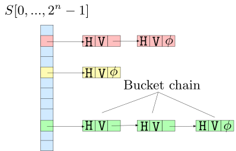
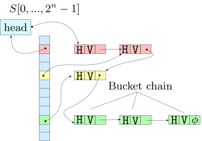

%load_ext itikzIntroduction
Hash tables are omniscient in the software world and we use them a lot. I recently watched Matt Kulukundis’ CppCon 2017 talk, Designing a fast, efficient, cache-friendly hash Table, step by step. In this blog-post, I would like to explore the implementation details of the abseil library’s flat_hash_map data-structure.
The standard library’s unordered_set
Our starting point is the standard library’s implementation of a hash-table called the unordered_set. Here, we have a table(array) S, of size \(2^n\). The array elements \(S[0],\ldots,S[2^n - 1]\) are called slots. A new element is inserted into the table by hashing it, to find the correct slot. The element is stored at hash(item) % capacity() index. Two elements with the same hash-code, would have to be stored at the same slot; so we need a way to resolve collisions. unordered_set uses chaining, so each slot S[i] is more like a bucket, it is a linked-list of all items that hash to the same hash-code.
Show the code
%%itikz --temp-dir --tex-packages=tikz,color --tikz-libraries=arrows.meta --implicit-standalone
\begin{tikzpicture}[scale=2.5,transform shape]
\pagecolor{white}
\draw[fill=white!91!blue!90!cyan] (0,3) rectangle (0.3,0);
\draw (0,2.25) -- (0.3,2.25);
\draw (0,1.5) -- (0.3,1.5);
\draw (0,1.25) -- (0.3,1.25);
\draw (0,1) -- (0.3,1);
\draw (0,0.25) -- (0.3,0.25);
\draw[fill=pink] (0,2.75) rectangle (0.3,2.49);
\draw[fill=pink] (1,2.75) rectangle (1.3,2.49);
\draw[fill=pink] (1.3,2.75) rectangle (1.6,2.49);
\draw[fill=pink] (1.6,2.75) rectangle (1.9,2.49);
\draw[fill=pink] (2.3,2.75) rectangle (2.6,2.49);
\draw[fill=pink] (2.6,2.75) rectangle (2.9,2.49);
\draw[fill=pink] (2.9,2.75) rectangle (3.2,2.49);
\draw[fill=yellow!30] (0,2) rectangle (0.3,1.74);
\draw[fill=yellow!30] (1,2) rectangle (1.3,1.74);
\draw[fill=yellow!30] (1.3,2) rectangle (1.6,1.74);
\draw[fill=yellow!30] (1.6,2) rectangle (1.9,1.74);
\draw[fill=green!30] (0,0.73) rectangle (0.3,0.47);
\draw[fill=green!30] (1,0.73) rectangle (1.3,0.47);
\draw[fill=green!30] (1.3,0.73) rectangle (1.6,0.47);
\draw[fill=green!30] (1.6,0.73) rectangle (1.9,0.47);
\draw[fill=green!30] (2.3,0.73) rectangle (2.6,0.47);
\draw[fill=green!30] (2.6,0.73) rectangle (2.9,0.47);
\draw[fill=green!30] (2.9,0.73) rectangle (3.2,0.47);
\draw[fill=green!30] (3.7,0.73) rectangle (4,0.47);
\draw[fill=green!30] (4,0.73) rectangle (4.3,0.47);
\draw[fill=green!30] (4.3,0.73) rectangle (4.6,0.47);
\draw[arrows=-Latex] (0.15,2.6) -- (1.05,2.6);
\draw[arrows=-Latex] (0.16,1.86) -- (1.06,1.86);
\draw[arrows=-Latex] (0.15,0.58) -- (1.05,0.58);
\node[draw=none, node font=\small] at (0.15,3.33) {$S[0,...,2^n-1]$};
\node[draw=none, node font=\ttfamily] at (1.15,2.6) {H};
\node[draw=none, node font=\small] at (3.06,2.62) {$\phi$};
\node[draw=none, node font=\small] at (4.45,0.59) {$\phi$};
\node[draw=none, node font=\small] at (1.74,1.88) {$\phi$};
\node[draw=none, node font=\ttfamily] at (1.15,1.86) {H};
\node[draw=none, node font=\ttfamily] at (1.15,0.61) {H};
\node[draw=none, node font=\ttfamily] (node1) at (2.45,2.62) {H};
\draw[arrows=-Latex] (1.72,2.61) -- (2.36,2.62);
\draw[arrows=-Latex] (1.69,0.6) -- (2.33,0.61);
\draw[arrows=-Latex] (3.07,0.58) -- (3.71,0.59);
\node[draw=none, node font=\ttfamily] at (2.47,0.59) {H};
\node[draw=none, node font=\ttfamily] at (3.86,0.6) {H};
\node[draw=none, node font=\ttfamily] at (1.45,2.61) {V};
\node[draw=none, node font=\ttfamily] at (1.46,1.85) {V};
\node[draw=none, node font=\ttfamily] at (1.46,0.6) {V};
\node[draw=none, node font=\ttfamily] at (2.75,2.61) {V};
\node[draw=none, node font=\ttfamily] (node2) at (2.75,0.58) {V};
\node[draw=none, node font=\ttfamily] at (4.15,0.6) {V};
\draw (1.46,0.91) -- (2.8,1.4);
\draw (2.66,0.9) -- (2.8,1.4);
\draw (4.15,0.8) -- (2.8,1.4);
\node[draw=none, node font=\small] at (2.89,1.58) {Bucket chain};
\end{tikzpicture}
The H in the diagram is the hash-code. It is 64-bits. V is the actual value - the thing that we want to store. Because, each item lives in a separate node, different from the primary data-structure - the bucket array S, we say it has pointer-stability. No matter, what happens to the internals of the hash-table, the value doesn’t move, it lives at the same memory address. This is a property guaranteed by the standard. \(\phi\) denotes nullptr; it is used to indicate the end of linked-lists. The green nodes are all in the same bucket chain.
The above mental picture is ballpark correct. The actual picture is more like this:
Show the code
%%itikz --temp-dir --tex-packages=tikz,color --tikz-libraries=arrows.meta --implicit-standalone
\begin{tikzpicture}[scale=2.5,transform shape]
\pagecolor{white}
\draw[fill=white!91!blue!90!cyan] (0,3) rectangle (0.3,0);
\draw (0,2.25) -- (0.3,2.25);
\draw (0,1.5) -- (0.3,1.5);
\draw (0,1.25) -- (0.3,1.25);
\draw (0,1) -- (0.3,1);
\draw (0,0.25) -- (0.3,0.25);
\draw[fill=pink] (0,2.75) rectangle (0.3,2.49);
\draw[fill=pink] (1,2.75) rectangle (1.3,2.49);
\draw[fill=pink] (1.3,2.75) rectangle (1.6,2.49);
\draw[fill=pink] (1.6,2.75) rectangle (1.9,2.49);
\draw[fill=pink] (2.3,2.75) rectangle (2.6,2.49);
\draw[fill=pink] (2.6,2.75) rectangle (2.9,2.49);
\draw[fill=pink] (2.9,2.75) rectangle (3.2,2.49);
\draw[fill=yellow!30] (0,2) rectangle (0.3,1.74);
\draw[fill=yellow!30] (1,2) rectangle (1.3,1.74);
\draw[fill=yellow!30] (1.3,2) rectangle (1.6,1.74);
\draw[fill=yellow!30] (1.6,2) rectangle (1.9,1.74);
\draw[fill=green!30] (0,0.73) rectangle (0.3,0.47);
\draw[fill=green!30] (1,0.73) rectangle (1.3,0.47);
\draw[fill=green!30] (1.3,0.73) rectangle (1.6,0.47);
\draw[fill=green!30] (1.6,0.73) rectangle (1.9,0.47);
\draw[fill=green!30] (2.3,0.73) rectangle (2.6,0.47);
\draw[fill=green!30] (2.6,0.73) rectangle (2.9,0.47);
\draw[fill=green!30] (2.9,0.73) rectangle (3.2,0.47);
\draw[fill=green!30] (3.7,0.73) rectangle (4,0.47);
\draw[fill=green!30] (4,0.73) rectangle (4.3,0.47);
\draw[fill=green!30] (4.3,0.73) rectangle (4.6,0.47);
\node[draw=none, node font=\small] at (0.15,3.76) {$S[0,...,2^n-1]$};
\node[draw=none, node font=\ttfamily] (node6) at (1.15,2.6) {H};
\node[draw=none, node font=\small] at (4.45,0.59) {$\phi$};
\node[draw=none, node font=\ttfamily] (node5) at (1.15,1.86) {H};
\node[draw=none, node font=\ttfamily] (node8) at (1.15,0.61) {H};
\node[draw=none, node font=\ttfamily] (node1) at (2.45,2.62) {H};
\draw[arrows=-Latex] (1.72,2.61) -- (2.36,2.62);
\draw[arrows=-Latex] (1.69,0.6) -- (2.33,0.61);
\draw[arrows=-Latex] (3.07,0.58) -- (3.71,0.59);
\node[draw=none, node font=\ttfamily] at (2.47,0.59) {H};
\node[draw=none, node font=\ttfamily] at (3.86,0.6) {H};
\node[draw=none, node font=\ttfamily] (node4) at (1.45,2.61) {V};
\node[draw=none, node font=\ttfamily] (node9) at (1.46,1.85) {V};
\node[draw=none, node font=\ttfamily] at (1.46,0.6) {V};
\node[draw=none, node font=\ttfamily] (node7) at (2.75,2.61) {V};
\node[draw=none, node font=\ttfamily] (node2) at (2.75,0.58) {V};
\node[draw=none, node font=\ttfamily] at (4.15,0.6) {V};
\draw (1.46,0.91) -- (2.8,1.4);
\draw (2.66,0.9) -- (2.8,1.4);
\draw (4.15,0.8) -- (2.8,1.4);
\node[draw=none, node font=\small] at (2.89,1.58) {Bucket chain};
\node[draw, node font=\small, fill=white!97!blue!88!cyan] (node3) at (-0.68,3.25) {head};
\draw[arrows=Circle-Latex] (0.2,2.65) .. controls (-0.87,2.25) and (-0.77,2.8) .. (-0.82,3.02);
\draw[arrows=Circle-Latex] (node3.east) .. controls (0.3,3.48) and (0.92,3.5) .. (1.12,2.76);
\draw[arrows=Circle-Latex] (0.1,1.84) .. controls (0.57,2.5) and (1.37,1.85) .. (2.36,2.49);
\draw[arrows=Circle-Latex] (3.05,2.62) .. controls (3.7,2.31) and (2.5,2.39) .. (1.9,2);
\draw[arrows=Circle-Latex] (0.15,0.55) .. controls (1,1) and (0.3,1.58) .. (node5.west);
\draw[arrows=Circle-Latex] (1.73,1.9) .. controls (1.4,0.73) and (0.18,1.08) .. (1,0.5);
\end{tikzpicture}